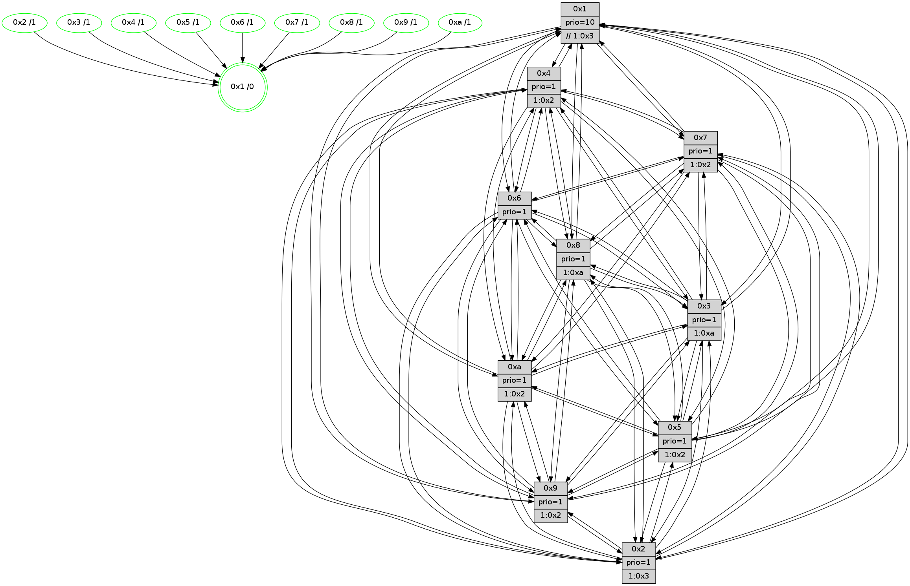

>> << IDX [start] -100 -25 -5 +0 +5 +25 +100 [1095.142519]
 Previous packets
----------------------------------------------------------------------
1090.413732 beacon01(faad) #0 coord=01,02,03,04,05,06,07,0a,09,08 cycle=688.0ms assoc
-- color-indic=1 64 34 b7
1090.423715 beacon02(faad) #0 coord=01,02,03,04,05,06,07,0a,09,08 cycle=688.0ms assoc 64 a7 86
1090.433715 beacon03(faad) #0 coord=01,02,03,04,05,06,07,0a,09,08 cycle=688.0ms assoc 64 dd cb
1090.443716 beacon04(faad) #0 coord=01,02,03,04,05,06,07,0a,09,08 cycle=688.0ms assoc 64 aa 21
1090.453716 beacon05(faad) #0 coord=01,02,03,04,05,06,07,0a,09,08 cycle=688.0ms assoc 64 d0 6c
1090.463715 beacon06(faad) #0 coord=01,02,03,04,05,06,07,0a,09,08 cycle=688.0ms assoc 64 5e bb
1090.473716 beacon07(faad) #0 coord=01,02,03,04,05,06,07,0a,09,08 cycle=688.0ms assoc 64 24 f6
1090.483719 beacon0a(faad) #0 coord=01,02,03,04,05,06,07,0a,09,08 cycle=688.0ms assoc 64 55 fd
1090.493721 beacon09(faad) #0 coord=01,02,03,04,05,06,07,0a,09,08 cycle=688.0ms assoc 64 db 2a
1090.503722 beacon08(faad) #0 coord=01,02,03,04,05,06,07,0a,09,08 cycle=688.0ms assoc 64 a1 67
1090.515234 [Hello(10): seq=629 sym=6,2,3,8,7,5,9,4,1 sysInfo=hasWarning stat=6:4,11,13,6/2:4,1,1,9/3:10,4,2,10/8:2,6,6,0/7:5,12,12,4/5:13,3,10,14/9:2,3,14,2/4:11,3,14,8/1:8,12,11,1]
1090.517959 [Color(2) seq=288 @0:0 prio=1 >1.@3,1.@4,1.@5,1.@6]
1090.520455 [Hello(9): seq=640 sym=2,5,3,7,6,8,10,1 sysInfo=hasWarning stat=2:14,1,7,7/5:4,5,7,5/3:0,3,11,14/7:2,4,1,0/6:13,15,2,11/8:5,13,11,3/10:10,3,13,3/1:3,13,2,1]
1090.523470 [Hello(7): seq=696 sym=2,3,5,6,4,8,9,10,1 sysInfo=hasWarning stat=2:15,9,1,0/3:3,7,15,14/5:7,11,15,1/6:13,9,14,9/4:1,3,3,0/8:7,7,9,1/9:3,9,1,1/10:7,14,2,4/1:4,7,3,0]
1090.526157 [Color(9) seq=302 @0:0 prio=1 >1.@2,1.@3,1.@5,1.@6]
1090.528925 [Color(5) seq=303 @0:0 prio=1 >1.@2,1.@4,1.@7,1.@8]
1090.530893 [Color(7) seq=255 @0:0 prio=1 >1.@2,1.@3,1.@5,1.@6]
1090.533424 [Color(1) seq=377 @0:0 prio=10 >>1.@2,1.@3,1.@4]
1090.541016 [Hello(4): seq=696 sym=5,7,6,2,3,9,8,10,1 sysInfo= stat=5:3,7,9,14/7:1,14,9,9/6:6,4,9,12/2:7,1,2,13/3:5,1,9,10/9:10,6,14,10/8:11,2,13,4/10:7,13,2,12/1:12,15,4,1]
1090.544484 [Color(4) seq=276 @0:0 prio=1 >1.@2,1.@3,1.@5,1.@6]
----------------------------------------------------------------------
1091.201863 beacon01(faad) #0 coord=01,02,03,04,05,06,07,0a,09,08 cycle=688.0ms assoc
-- color-indic=1 64 f0 b9
1091.211845 beacon02(faad) #0 coord=01,02,03,04,05,06,07,0a,09,08 cycle=688.0ms assoc 64 63 88
1091.221845 beacon03(faad) #0 coord=01,02,03,04,05,06,07,0a,09,08 cycle=688.0ms assoc 64 19 c5
1091.231846 beacon04(faad) #0 coord=01,02,03,04,05,06,07,0a,09,08 cycle=688.0ms assoc 64 6e 2f
1091.241848 beacon05(faad) #0 coord=01,02,03,04,05,06,07,0a,09,08 cycle=688.0ms assoc 64 14 62
1091.251847 beacon06(faad) #0 coord=01,02,03,04,05,06,07,0a,09,08 cycle=688.0ms assoc 64 9a b5
1091.261848 beacon07(faad) #0 coord=01,02,03,04,05,06,07,0a,09,08 cycle=688.0ms assoc 64 e0 f8
1091.271851 beacon0a(faad) #0 coord=01,02,03,04,05,06,07,0a,09,08 cycle=688.0ms assoc 64 91 f3
1091.281851 beacon09(faad) #0 coord=01,02,03,04,05,06,07,0a,09,08 cycle=688.0ms assoc 64 1f 24
1091.291851 beacon08(faad) #0 coord=01,02,03,04,05,06,07,0a,09,08 cycle=688.0ms assoc 64 65 69
1091.304040 [Hello(5): seq=697 sym=7,6,4,3,1,9,8,10,2 sysInfo=hasWarning stat=7:3,3,0,11/6:4,9,2,2/4:4,1,11,10/3:2,8,7,12/1:7,8,6,1/9:3,5,10,8/8:13,0,7,0/10:4,11,7,7/2:4,10,10,4]
1091.307021 [Hello(2): seq=693 sym=4,5,7,6,3,9,8,10,1 sysInfo=hasWarning stat=4:13,0,0,8/5:9,13,5,0/7:0,2,13,11/6:1,15,7,11/3:10,14,4,7/9:5,13,5,6/8:1,3,1,9/10:12,14,9,10/1:12,12,6,0]
1091.311403 [Hello(3): seq=697 sym=1,7,6,2,4,8,9,10,5 sysInfo=hasWarning stat=1:5,5,14,0/7:13,4,5,9/6:3,12,4,5/2:4,0,8,0/4:15,11,10,9/8:10,0,2,2/9:9,10,10,13/10:14,5,7,3/5:11,12,15,14]
1091.314547 [Color(3) seq=326 @0:0 prio=1 >1.@a]
1091.316644 [Hello(1): seq=606 sym=4,2,9,5,10,3,8,6,7 sysInfo=coloring-mode-on,ColoringModeRequestCalled stat=4:14,2,13,2/2:12,2,11,0/9:6,9,9,7/5:14,1,4,7/10:10,1,13,5/3:11,6,1,5/8:8,1,11,1/6:9,8,13,13/7:10,11,11,12]
1091.319507 [Color(10) seq=286 @0:0 prio=1 >1.@2,1.@8]
1091.322754 [Hello(6): seq=697 sym=2,3,5,4,7,9,8,10,1 sysInfo=hasWarning stat=2:8,14,12,6/3:0,0,9,10/5:9,11,10,0/4:15,4,4,3/7:9,2,12,9/9:0,2,13,7/8:14,10,6,3/10:3,2,0,12/1:1,10,2,1]
1091.327505 [Color(6) seq=329 @0:0 prio=1]
1091.337371 [Color(8) seq=319 @0:0 prio=1 >1.@2,1.@a]
----------------------------------------------------------------------
1091.989992 beacon01(faad) #0 coord=01,02,03,04,05,06,07,0a,09,08 cycle=688.0ms assoc
-- color-indic=1 64 4c bc
1091.999974 beacon02(faad) #0 coord=01,02,03,04,05,06,07,0a,09,08 cycle=688.0ms assoc 64 df 8d
1092.009975 beacon03(faad) #0 coord=01,02,03,04,05,06,07,0a,09,08 cycle=688.0ms assoc 64 a5 c0
1092.019976 beacon04(faad) #0 coord=01,02,03,04,05,06,07,0a,09,08 cycle=688.0ms assoc 64 d2 2a
1092.029976 beacon05(faad) #0 coord=01,02,03,04,05,06,07,0a,09,08 cycle=688.0ms assoc 64 a8 67
1092.039976 beacon06(faad) #0 coord=01,02,03,04,05,06,07,0a,09,08 cycle=688.0ms assoc 64 26 b0
1092.049975 beacon07(faad) #0 coord=01,02,03,04,05,06,07,0a,09,08 cycle=688.0ms assoc 64 5c fd
1092.059981 beacon0a(faad) #0 coord=01,02,03,04,05,06,07,0a,09,08 cycle=688.0ms assoc 64 2d f6
1092.069979 beacon09(faad) #0 coord=01,02,03,04,05,06,07,0a,09,08 cycle=688.0ms assoc 64 a3 21
1092.079981 beacon08(faad) #0 coord=01,02,03,04,05,06,07,0a,09,08 cycle=688.0ms assoc 64 d9 6c
1092.092477 [Hello(8): seq=641 sym=5,2,3,4,9,6,7,10,1 sysInfo=hasWarning stat=5:1,12,14,0/2:10,7,9,9/3:8,15,13,14/4:8,3,4,9/9:5,10,15,3/6:0,9,12,13/7:6,15,13,2/10:9,5,1,3/1:5,0,1,0]
1092.099296 [Color(4) seq=277 @0:0 prio=1 >1.@2,1.@3,1.@5,1.@6]
1092.101086 [Hello(9): seq=641 sym=2,5,3,4,7,6,8,10,1 sysInfo=hasWarning stat=2:15,2,7,7/5:5,6,7,5/3:1,4,11,14/4:0,1,0,0/7:2,5,1,0/6:14,0,2,11/8:6,14,11,3/10:10,4,13,3/1:4,14,2,1]
1092.104113 [Color(5) seq=304 @0:0 prio=1 >1.@2,1.@4,1.@7,1.@8]
1092.106131 [Color(9) seq=303 @0:0 prio=1 >1.@2,1.@3,1.@5,1.@6]
1092.108689 [Hello(10): seq=630 sym=6,2,3,8,7,5,9,4,1 sysInfo=hasWarning stat=6:5,12,13,6/2:4,2,1,9/3:10,4,2,10/8:2,7,6,0/7:6,13,12,4/5:14,4,10,14/9:3,4,14,2/4:12,4,14,8/1:8,13,11,1]
1092.116088 [Hello(7): seq=697 sym=2,3,5,6,4,8,9,10,1 sysInfo=hasWarning stat=2:0,10,1,0/3:4,8,15,14/5:8,11,15,1/6:14,10,14,9/4:2,4,3,0/8:7,8,9,1/9:3,9,1,1/10:8,15,2,4/1:5,8,3,0]
1092.118929 [Color(7) seq=256 @0:0 prio=1 >1.@2,1.@3,1.@5,1.@6]
----------------------------------------------------------------------
1092.778128 beacon01(faad) #0 coord=01,02,03,04,05,06,07,0a,09,08 cycle=688.0ms assoc
-- color-indic=1 64 78 a4
1092.788109 beacon02(faad) #0 coord=01,02,03,04,05,06,07,0a,09,08 cycle=688.0ms assoc 64 eb 95
1092.798110 beacon03(faad) #0 coord=01,02,03,04,05,06,07,0a,09,08 cycle=688.0ms assoc 64 91 d8
1092.808110 beacon04(faad) #0 coord=01,02,03,04,05,06,07,0a,09,08 cycle=688.0ms assoc 64 e6 32
1092.818110 beacon05(faad) #0 coord=01,02,03,04,05,06,07,0a,09,08 cycle=688.0ms assoc 64 9c 7f
1092.828112 beacon06(faad) #0 coord=01,02,03,04,05,06,07,0a,09,08 cycle=688.0ms assoc 64 12 a8
1092.838110 beacon07(faad) #0 coord=01,02,03,04,05,06,07,0a,09,08 cycle=688.0ms assoc 64 68 e5
1092.848117 beacon0a(faad) #0 coord=01,02,03,04,05,06,07,0a,09,08 cycle=688.0ms assoc 64 19 ee
1092.858115 beacon09(faad) #0 coord=01,02,03,04,05,06,07,0a,09,08 cycle=688.0ms assoc 64 97 39
1092.868115 beacon08(faad) #0 coord=01,02,03,04,05,06,07,0a,09,08 cycle=688.0ms assoc 64 ed 74
1092.879329 [Hello(2): seq=694 sym=4,5,7,6,3,9,8,10,1 sysInfo=hasWarning stat=4:13,1,0,8/5:9,14,5,0/7:1,3,13,11/6:2,0,7,11/3:11,15,4,7/9:6,14,5,6/8:2,4,1,9/10:13,15,9,10/1:13,12,6,0]
1092.884024 [Hello(3): seq=698 sym=1,7,6,2,4,8,9,10,5 sysInfo=hasWarning stat=1:6,6,14,0/7:14,5,5,9/6:4,13,4,5/2:4,0,8,0/4:15,12,10,9/8:11,1,2,2/9:10,11,10,13/10:15,6,7,3/5:12,13,15,14]
1092.886749 [Color(10) seq=287 @0:0 prio=1 >1.@2,1.@8]
1092.888257 [Color(3) seq=327 @0:0 prio=1 >1.@a]
1092.893485 [Hello(5): seq=698 sym=7,6,4,3,1,9,8,10,2 sysInfo=hasWarning stat=7:4,4,0,11/6:5,10,2,2/4:4,1,11,10/3:3,9,7,12/1:8,8,6,1/9:3,6,10,8/8:14,1,7,0/10:5,12,7,7/2:5,10,10,4]
1092.896188 [Color(8) seq=320 @0:0 prio=1 >1.@2,1.@a]
1092.900492 [Hello(6): seq=698 sym=2,3,5,4,7,9,8,10,1 sysInfo=hasWarning stat=2:8,15,12,6/3:0,0,9,10/5:10,12,10,0/4:15,5,4,3/7:10,3,12,9/9:1,3,13,7/8:15,11,6,3/10:4,2,0,12/1:1,10,2,1]
1092.904593 [Color(6) seq=330 @0:0 prio=1]
1092.909634 [Hello(1): seq=607 sym=4,2,9,5,10,3,8,6,7 sysInfo=coloring-mode-on,ColoringModeRequestCalled stat=4:14,3,13,2/2:12,2,11,0/9:7,10,9,7/5:14,2,4,7/10:11,2,13,5/3:11,6,1,5/8:9,2,11,1/6:10,9,13,13/7:11,12,11,12]
1092.914382 [STC(1) #0.162 tree-change,inconsistent-stability,stable,to-color d=0]
----------------------------------------------------------------------
1093.566258 beacon01(faad) #0 coord=01,02,03,04,05,06,07,0a,09,08 cycle=688.0ms assoc
-- color-indic=1 64 c4 a1
1093.576241 beacon02(faad) #0 coord=01,02,03,04,05,06,07,0a,09,08 cycle=688.0ms assoc 64 57 90
1093.586241 beacon03(faad) #0 coord=01,02,03,04,05,06,07,0a,09,08 cycle=688.0ms assoc 64 2d dd
1093.596242 beacon04(faad) #0 coord=01,02,03,04,05,06,07,0a,09,08 cycle=688.0ms assoc 64 5a 37
1093.606242 beacon05(faad) #0 coord=01,02,03,04,05,06,07,0a,09,08 cycle=688.0ms assoc 64 20 7a
1093.616242 beacon06(faad) #0 coord=01,02,03,04,05,06,07,0a,09,08 cycle=688.0ms assoc 64 ae ad
1093.626243 beacon07(faad) #0 coord=01,02,03,04,05,06,07,0a,09,08 cycle=688.0ms assoc 64 d4 e0
1093.636246 beacon0a(faad) #0 coord=01,02,03,04,05,06,07,0a,09,08 cycle=688.0ms assoc 64 a5 eb
1093.646247 beacon09(faad) #0 coord=01,02,03,04,05,06,07,0a,09,08 cycle=688.0ms assoc 64 2b 3c
1093.656247 beacon08(faad) #0 coord=01,02,03,04,05,06,07,0a,09,08 cycle=688.0ms assoc 64 51 71
1093.669641 [Hello(8): seq=642 sym=5,2,3,4,9,6,7,10,1 sysInfo=hasWarning stat=5:1,13,14,0/2:11,8,9,9/3:8,15,13,14/4:8,4,4,9/9:6,11,15,3/6:1,10,12,13/7:7,0,13,2/10:10,5,1,3/1:6,0,2,0]
1093.672363 [STC(5)->1 #0.162 tree-change,inconsistent-stability,stable,to-color d=1]
1093.673967 [Hello(9): seq=642 sym=2,5,3,4,7,6,8,10,1 sysInfo=hasWarning stat=2:0,2,7,7/5:6,6,7,5/3:2,5,11,14/4:0,1,0,0/7:3,6,1,0/6:15,1,2,11/8:7,15,11,3/10:11,5,13,3/1:5,14,3,1]
1093.676453 [STC(8)->1 #0.162 tree-change,inconsistent-stability,stable,to-color d=1]
1093.678198 [STC(2)->1 #0.162 tree-change,inconsistent-stability,stable,to-color d=1]
1093.680457 [Color(2) seq=290 @0:0 prio=1 >1.@3,1.@4,1.@5,1.@6]
1093.684793 [Color(1) seq=379 @0:0 prio=10 >>1.@3,1.@4,1.@5]
1093.686960 [STC(9)->1 #0.162 tree-change,inconsistent-stability,stable,to-color d=1]
1093.688449 [Hello(4): seq=698 sym=5,7,6,2,3,9,8,10,1 sysInfo= stat=5:5,8,9,14/7:2,15,9,9/6:8,6,9,12/2:9,2,2,13/3:7,3,9,10/9:11,7,14,10/8:12,4,13,4/10:9,15,2,12/1:14,15,5,1]
1093.691601 [Hello(10): seq=631 sym=6,2,3,8,7,5,9,4,1 sysInfo=hasWarning stat=6:6,13,13,6/2:5,2,1,9/3:10,5,2,10/8:2,8,6,0/7:7,14,12,4/5:15,4,10,14/9:3,4,14,2/4:12,4,14,8/1:9,13,12,1]
1093.695382 [STC(10)->1 #0.162 tree-change,inconsistent-stability,stable,to-color d=1]
1093.696919 [Hello(7): seq=698 sym=2,3,5,6,4,8,9,10,1 sysInfo=hasWarning stat=2:1,10,1,0/3:5,9,15,14/5:9,11,15,1/6:15,11,14,9/4:2,4,3,0/8:8,9,9,1/9:3,9,1,1/10:8,0,2,4/1:6,8,4,0]
1093.699668 [Color(5) seq=305 @0:0 prio=1 >1.@2,1.@4,1.@7,1.@8]
1093.703406 [STC(7)->1 #0.162 tree-change,inconsistent-stability,stable,to-color d=1]
1093.706020 [TreeStatus(7)-.->1 #0.162 tree-change,inconsistent-stability,stable child=1]
1093.707865 [Color(7) seq=257 @0:0 prio=1 >1.@2,1.@3,1.@5,1.@6]
1093.713468 [Color(9) seq=304 @0:0 prio=1 >1.@2,1.@3,1.@5,1.@6]
1093.717421 [TreeStatus(4)-.->1 #0.162 tree-change,inconsistent-stability,stable child=1]
1093.718942 [Color(4) seq=278 @0:0 prio=1 >1.@2,1.@3,1.@5,1.@6]
----------------------------------------------------------------------
1094.354389 beacon01(faad) #0 coord=01,02,03,04,05,06,07,0a,09,08 cycle=688.0ms assoc
-- color-indic=1 64 00 af
1094.364370 beacon02(faad) #0 coord=01,02,03,04,05,06,07,0a,09,08 cycle=688.0ms assoc 64 93 9e
1094.374370 beacon03(faad) #0 coord=01,02,03,04,05,06,07,0a,09,08 cycle=688.0ms assoc 64 e9 d3
1094.384371 beacon04(faad) #0 coord=01,02,03,04,05,06,07,0a,09,08 cycle=688.0ms assoc 64 9e 39
1094.394373 beacon05(faad) #0 coord=01,02,03,04,05,06,07,0a,09,08 cycle=688.0ms assoc 64 e4 74
1094.404372 beacon06(faad) #0 coord=01,02,03,04,05,06,07,0a,09,08 cycle=688.0ms assoc 64 6a a3
1094.414374 beacon07(faad) #0 coord=01,02,03,04,05,06,07,0a,09,08 cycle=688.0ms assoc 64 10 ee
1094.424377 beacon0a(faad) #0 coord=01,02,03,04,05,06,07,0a,09,08 cycle=688.0ms assoc 64 61 e5
1094.434378 beacon09(faad) #0 coord=01,02,03,04,05,06,07,0a,09,08 cycle=688.0ms assoc 64 ef 32
1094.444379 beacon08(faad) #0 coord=01,02,03,04,05,06,07,0a,09,08 cycle=688.0ms assoc 64 95 7f
1094.455645 [Hello(1): seq=608 sym=4,2,9,5,10,3,8,6,7 sysInfo=coloring-mode-on,ColoringModeRequestCalled stat=4:15,4,13,3/2:12,2,11,0/9:7,11,10,7/5:14,3,4,7/10:12,2,14,5/3:11,6,2,5/8:10,2,11,1/6:10,9,13,13/7:12,13,12,13]
1094.459060 [Color(8) seq=321 @0:0 prio=1 >1.@a]
1094.460532 [Hello(5): seq=699 sym=7,6,4,3,1,9,8,10,2 sysInfo=hasWarning stat=7:4,5,1,12/6:6,11,2,2/4:4,2,11,11/3:3,9,7,12/1:9,8,7,1/9:3,7,10,8/8:15,2,7,0/10:5,12,7,7/2:5,10,10,4]
1094.464331 [Hello(6): seq=699 sym=2,3,5,4,7,9,8,10,1 sysInfo=hasWarning stat=2:9,0,13,6/3:0,0,9,10/5:10,13,11,0/4:0,6,4,4/7:11,4,13,10/9:2,4,14,7/8:0,11,7,3/10:5,2,1,12/1:2,11,3,1]
1094.467009 [Hello(2): seq=695 sym=4,5,7,6,3,9,8,10,1 sysInfo=hasWarning stat=4:14,2,0,9/5:10,15,5,0/7:2,4,14,12/6:3,1,7,11/3:12,0,4,7/9:6,15,6,6/8:3,5,1,9/10:14,0,10,10/1:14,13,7,0]
1094.469574 [Hello(3): seq=699 sym=1,7,6,2,4,8,9,10,5 sysInfo=hasWarning stat=1:7,7,15,0/7:15,6,6,10/6:5,14,4,5/2:5,1,9,0/4:0,13,10,10/8:12,2,3,2/9:11,12,11,13/10:0,6,8,3/5:13,14,0,14]
1094.472717 [Color(6) seq=331 @0:0 prio=1]
1094.474004 [Color(10) seq=288 @0:0 prio=1 >1.@2,1.@8]